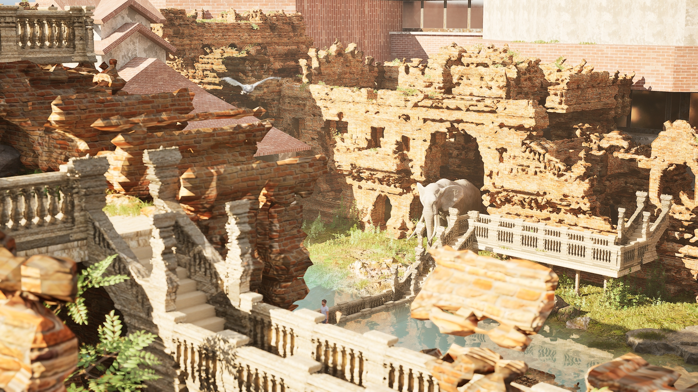
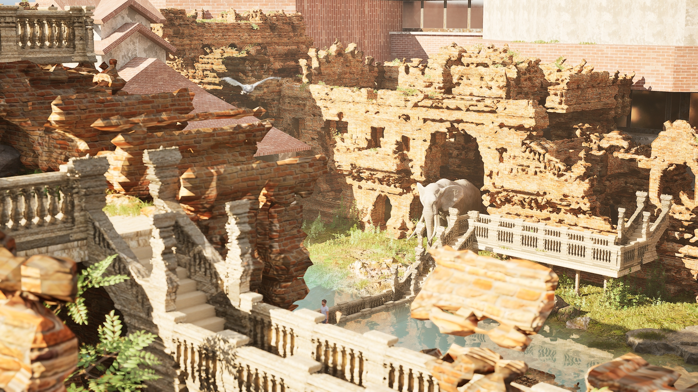

Invisible Boundaries
Y3 S1
Brief: Extrastatecraft: Infrapolitics vs the Critical Project
Description: Invisible Boundaries act as an infrastructure that invites wildlife back to the city area, using ruins as an asset to bring nature into urban life. The project focuses on rewilding spaces and redefining the relationship between cities and nature. Instead of decoration, nature becomes part of daily life, creating shared spaces for humans and wildlife through four key invisible boundary methods.
Program: Unreal Engine, Rhino, Blender
Other Drawings & Details
 



Additional Views